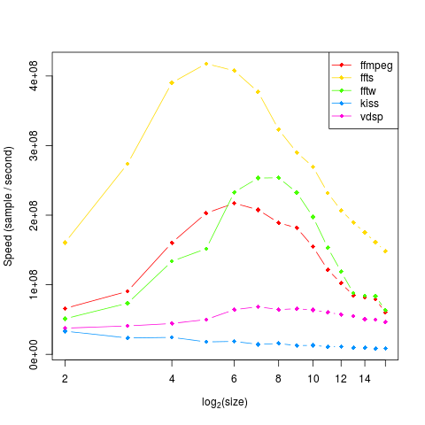
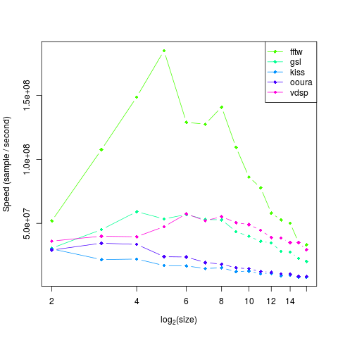
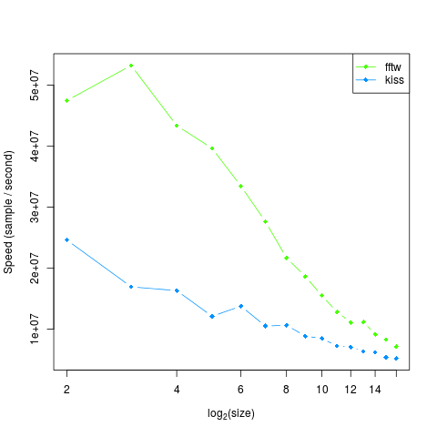

Here are a few simple benchmarks performed on ATFFT using google benchmark. They do not
measure the performance of the various FFT implementations (like the ones you will find on
the FFTW website), rather they measure the performance of those implementations as used
through the ATFFT interface. Timings include any manipulation that needs to be done in order
to get the input data in the correct format for the FFT implementation being used. Each
implementation was benchmarked for the floating point precisions it supports. The reported
speeds are calculated as [Input Length/CPU Time] giving results in
samples per second.
Figures 1, 2 and
3 speeds of each implementation in performing a forward FFT on complex
data of different lengths, with different precisions.

Figure 1: Single Precision Complex Transform

Figure 2: Double Precision Complex Transform

Figure 3: Long Double Precision Complex Transform
File translated from
TEX
by
TTH,
version 4.03. On 23 Apr 2016, 13:18.